Original scans of the press sources cited in Valentina Black's biography, kept here for reference and independent verification. Each entry is linked from its matching numbered citation.
“Miss Italia. 1939/2009: storia, protagoniste e vincitrici”
Testi di Edmondo Berselli · Arnoldo Mondadori Editore, 2009 · ISBN 978-88-370-6888-2
Front cover.
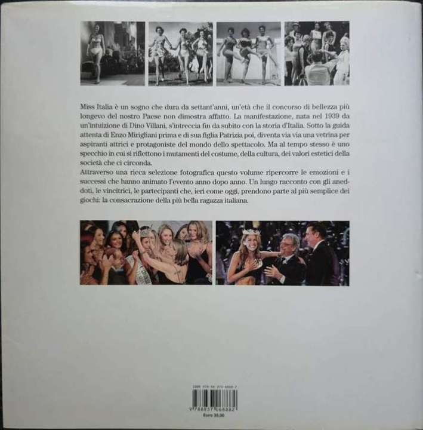
Back cover, with ISBN 978-88-370-6888-2.
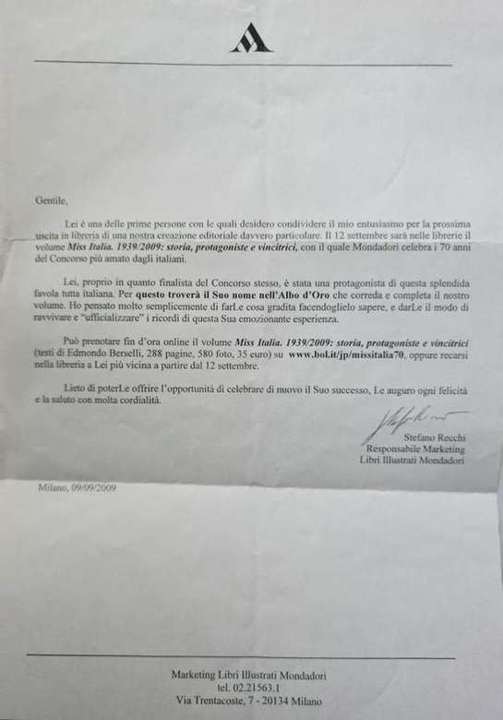
Letter from Mondadori's Libri Illustrati marketing department (Stefano Recchi, 9 Sept 2009) notifying her, as a Miss Italia finalist, that her name appears in the book's “Albo d'Oro.”The book's “Albo d'Oro” (official roster), p.289, year 2000, entry 6: “Miss Veneto — Serugeri Valentina.”
Interview by Chiara Tajoli · L'Arena · Friday 20 December 2002, Spettacoli section, p.45
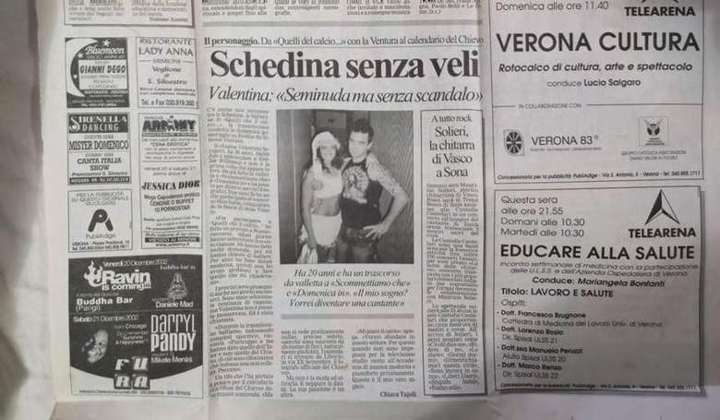
The article, with the photo she is pictured in with Robbie Williams (captioned in the piece as taken backstage at "Quelli Che Il Calcio").
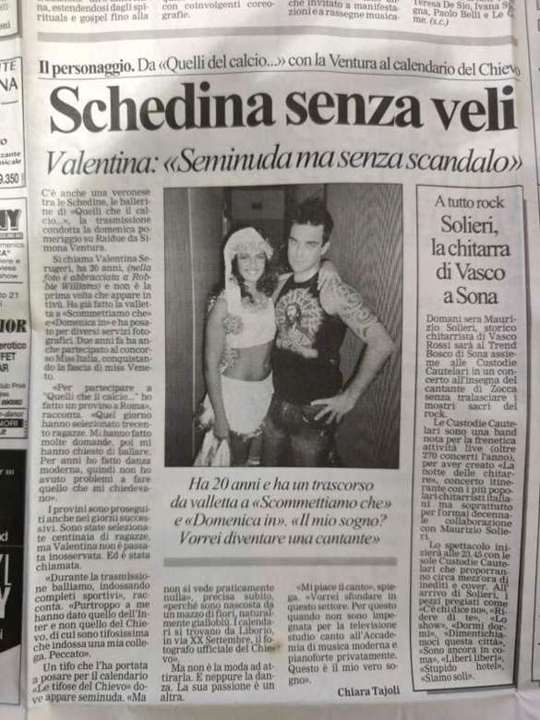
Full page scan, byline Chiara Tajoli: "Valentina Serugeri, ha 20 anni... Due anni fa ha anche partecipato al concorso Miss Italia, conquistando la fascia di miss Veneto."Lei con Robbie Williams — the photo referenced in the article ("nella foto è abbracciata a Robbie Williams").
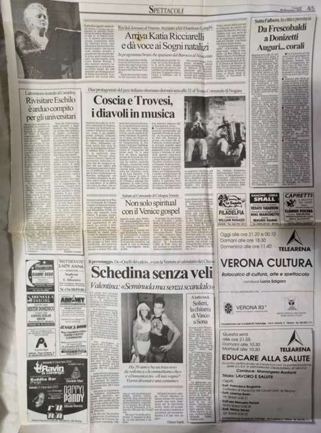
L'Arena — full page as printed, confirming section ("Spettacoli"), date ("Venerdì 20 Dicembre 2002") and page number ("45") exactly as cited.
By Wally Battisti · Un Mese a Verona, Anno 5 n.7, July 2001, p.25
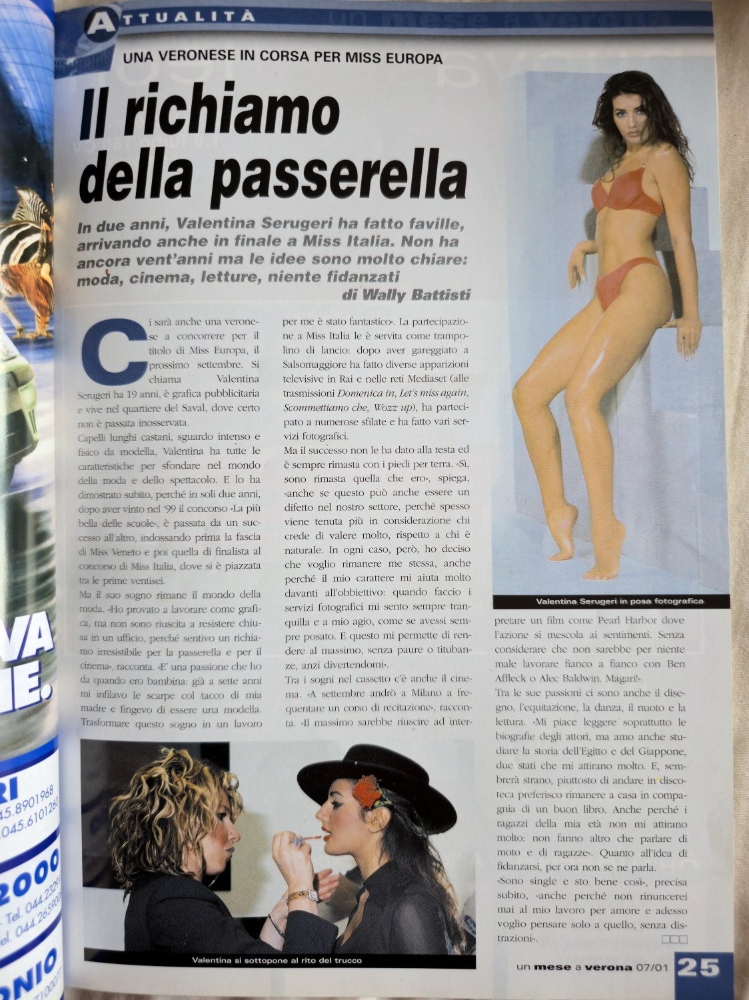
"Una veronese in corsa per Miss Europa" — profile naming Valentina Serugeri ahead of the Miss Europa candidacy.
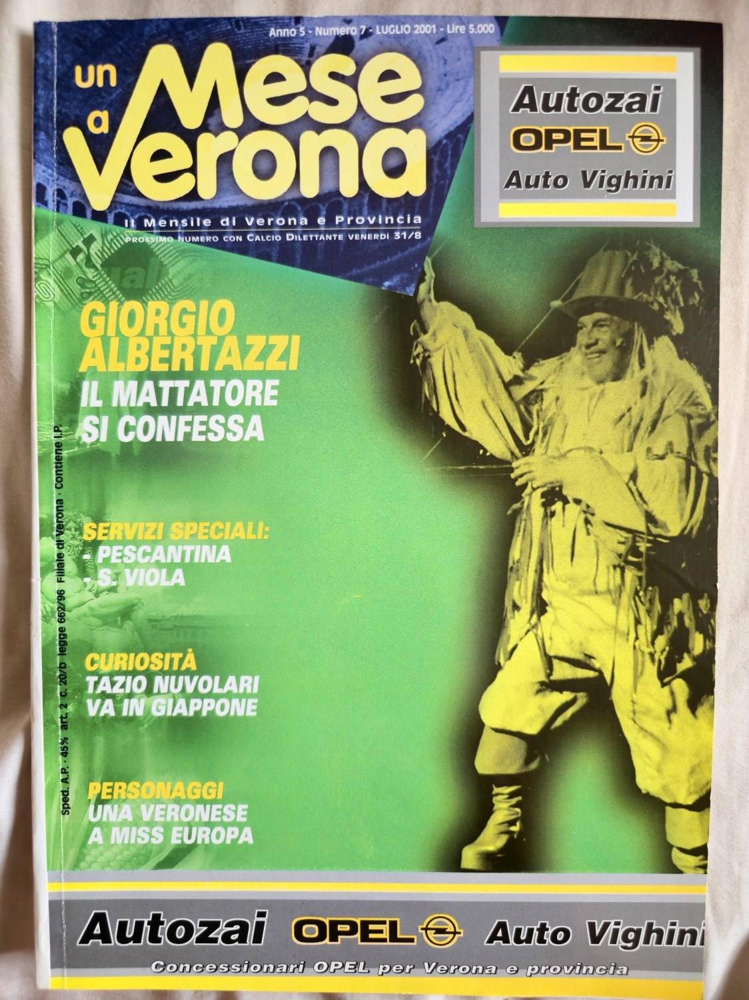
Un Mese a Verona — cover of the same issue (Anno 5, Numero 7, Luglio 2001), cover-teasing "PERSONAGGI: Una veronese a Miss Europa."
Correction: the biography previously credited this citation to Chiara Tajoli under a different headline. The scan on file shows the actual byline is Wally Battisti and the headline is "Il richiamo della passerella" — the reference text has been corrected to match.
TV Sorrisi e Canzoni n.37 (10–16 Sept 2000) · Visto (Sept 2000) · Gazzetta di Parma, Thu 7 Sept 2000
TV Sorrisi e Canzoni, n.37 — cover, "Le foto delle 100 finaliste: Miss Italia 2000" (issue dated 10–16 Sept 2000).
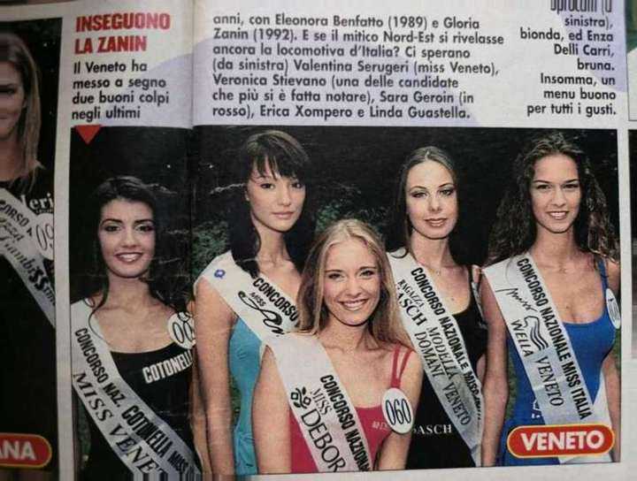
Visto — "Valentina Serugeri (miss Veneto)" among the Veneto candidates.
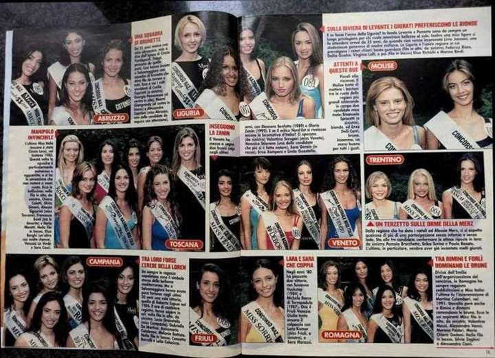
Visto — the full region-by-region spread this Veneto item appears in, confirming the "sfida delle regioni" feature promised on the cover.TV Sorrisi e Canzoni — "006 Valentina Serugeri, Miss Veneto, Verona, 18 anni."Visto, n.36 — cover, "A Miss Italia la sfida delle regioni" (8 Sept 2000).
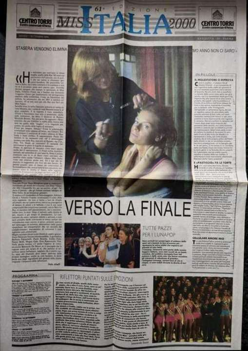
Gazzetta di Parma, 7 Sept 2000 — front page of the "Miss Italia 2000" special section this item ran in.Gazzetta di Parma, 7 Sept 2000 — "Valentina Serugeri, nata a Verona... 3 febbraio 1982," with her regional-finalist profile.
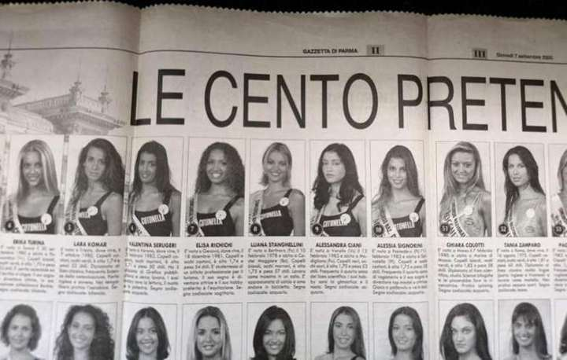
Gazzetta di Parma, 7 Sept 2000 — clearer detail crop, with the masthead ("Gazzetta di Parma, II/III, Giovedì 7 settembre 2000") and Valentina's entry both legible.
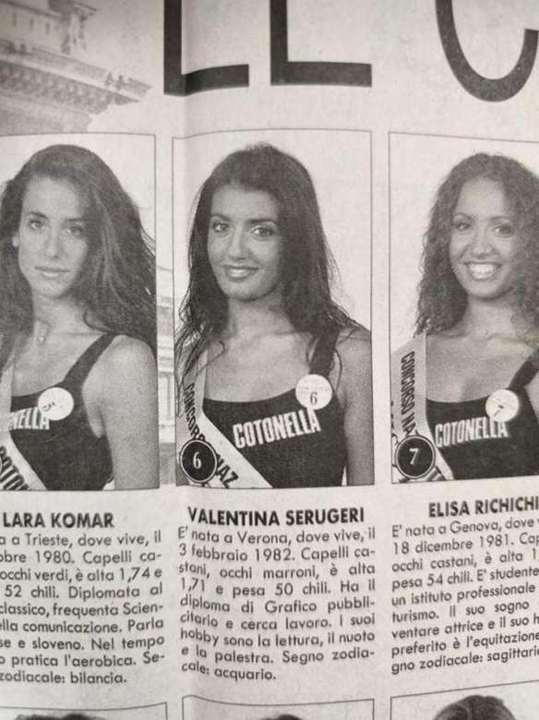
Gazzetta di Parma — close-up: "Valentina Serugeri. E' nata a Verona, dove vive, il 3 febbraio 1982..."
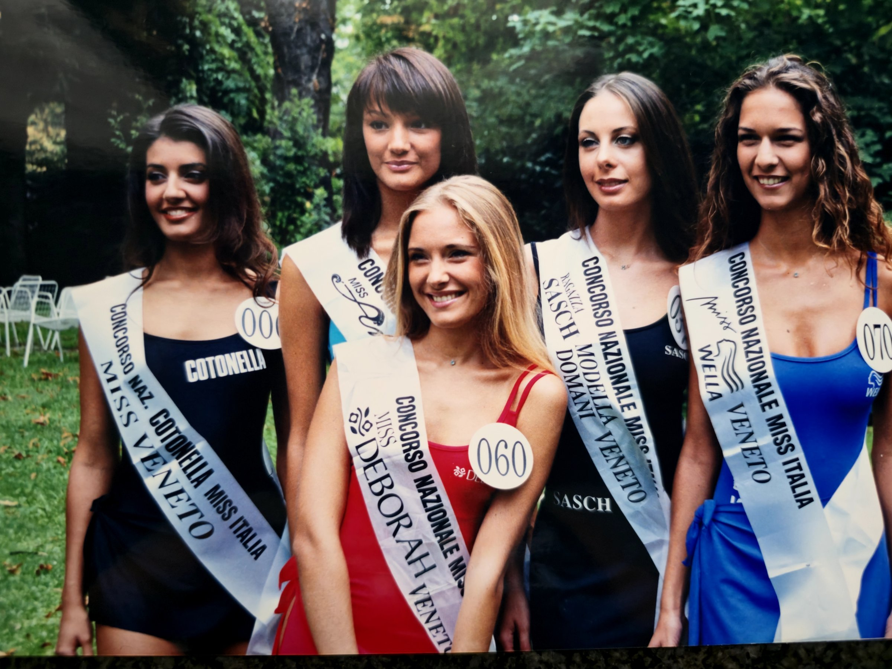
Personal photo (provided in high resolution): the Veneto regional finalists in sash, including sashes reading "Concorso Naz. Cotonella Miss Veneto," "Miss Deborah Veneto," "Modella Domani Sasch" and "Concorso Nazionale Miss Veneto" (Wella).
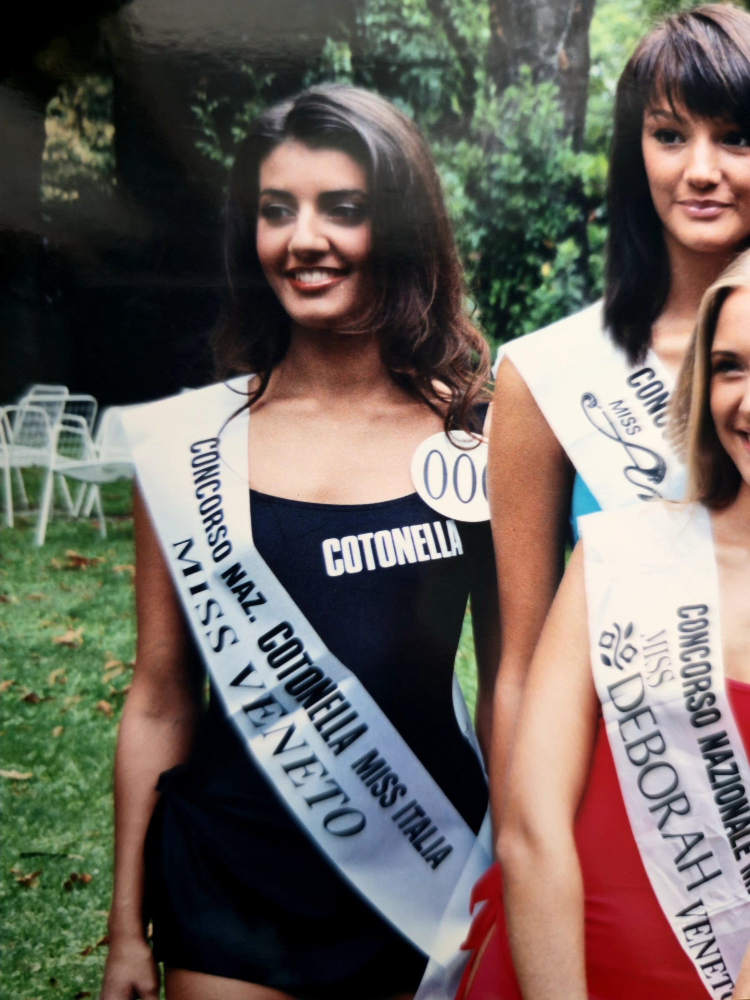
Personal photo (high resolution): closer view of the same group, Cotonella and Deborah Veneto sashes visible.Personal photo (high resolution): solo runway shot from the same regional heat.
The three photos above are personal photographs (not newspaper clippings) from the Miss Italia 2000 Veneto regional event, the same occasion documented by TV Sorrisi e Canzoni's regional-finalist feature above. Individual faces in the group shot aren't labeled by name, so no specific position in that photo is asserted here.
SUPPORTING
Gazzetta di Parma, 12 September 2000
Front page, Miss Italia 2000 final results
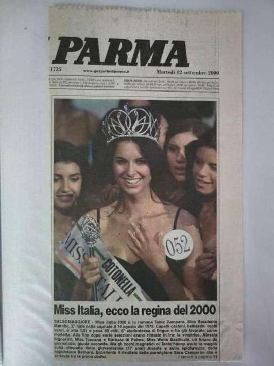
Front-page report on the Miss Italia 2000 final at Salsomaggiore — background context for the same pageant cycle; does not name Valentina individually.
Miren International / Concorso Nazionale Miss Italia — official accreditation letter
Lettera di Accredito · Roma, August 2000
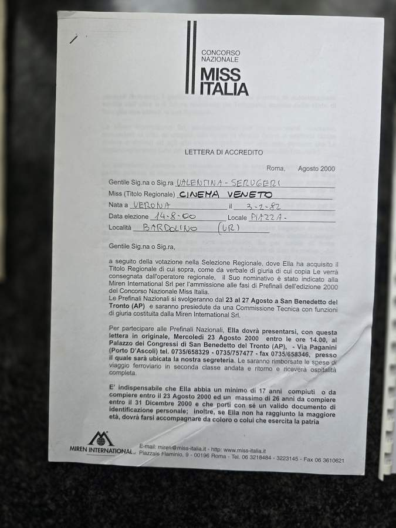
Official letter from Miren International Srl (organizer of Concorso Nazionale Miss Italia), addressed to “Valentina Serugeri,” confirming her regional title “Miss Cinema Veneto,” birth details (Verona, 3-2-82), election date (14-8-00, Bardolino), and admission to the national pre-finals at San Benedetto del Tronto, 23–27 August 2000.
Primary organizational document from the pageant itself (not a press clipping), independently corroborating the regional title, date and location already documented via press coverage in citation 4.
SUPPORTING
Miss Italia 2000 — Salsomaggiore Terme finals week
Personal photos, September 2000 · Salsomaggiore Terme national finals & San Benedetto del Tronto pre-finals
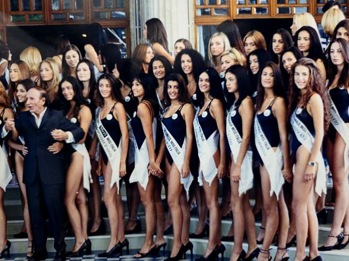
Personal photo: with Enzo Mirigliani (patron of the Miss Italia pageant) during finals week at Salsomaggiore Terme.
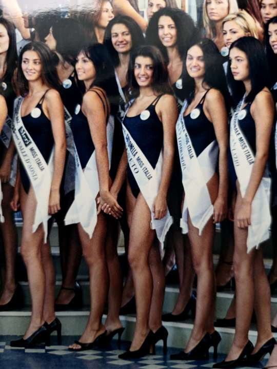
Personal photo: group shot of finalists at Salsomaggiore Terme; individual faces are not labeled by name.
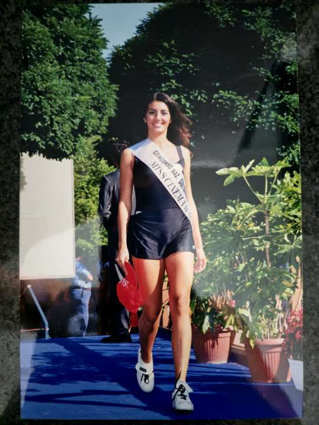
Personal photo: on the runway wearing a "Miss Cinema Veneto" sash.
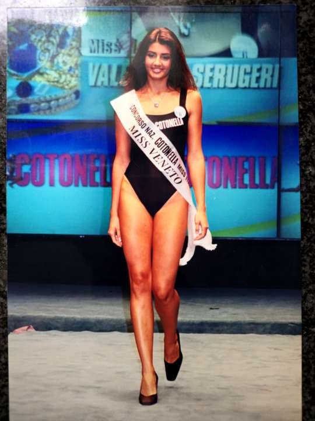
Personal photo: from the pre-finals heat at San Benedetto del Tronto, part of the same Miss Italia 2000 cycle documented in citation 4.
Personal snapshots (not press clippings) from the same Miss Italia 2000 national cycle as citation 4 above; kept here as supporting material rather than as an independent citation, since they are self-supplied rather than independently published.
SUPPORTING
Miss Italia 2000 — Cantalago Festival
Personal photos, 2000 · Cantalago
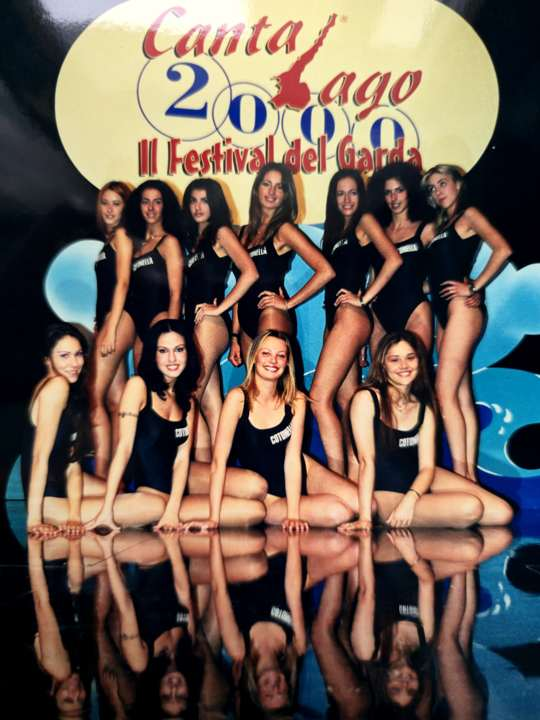
Personal photo: group photo at the Cantalago 2000 Festival.
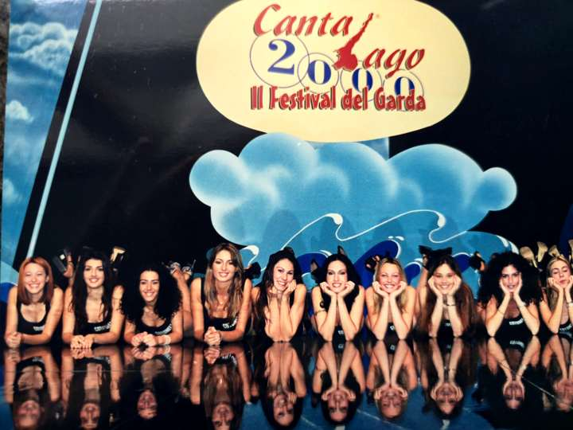
Personal photo: contestant lineup, same Cantalago 2000 event.
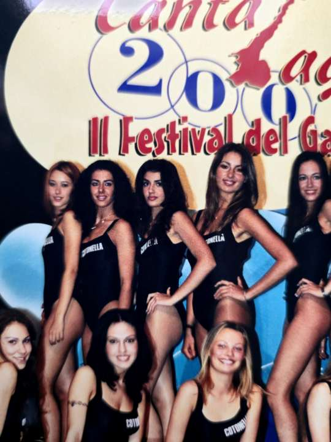
Personal photo: a second group shot from the same event.
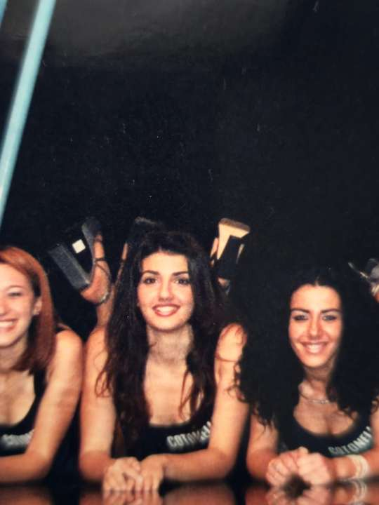
Personal photo: close-up wearing a "Cotonella" sash, consistent with the Cotonella branding also seen in citation 4's high-resolution group photo.
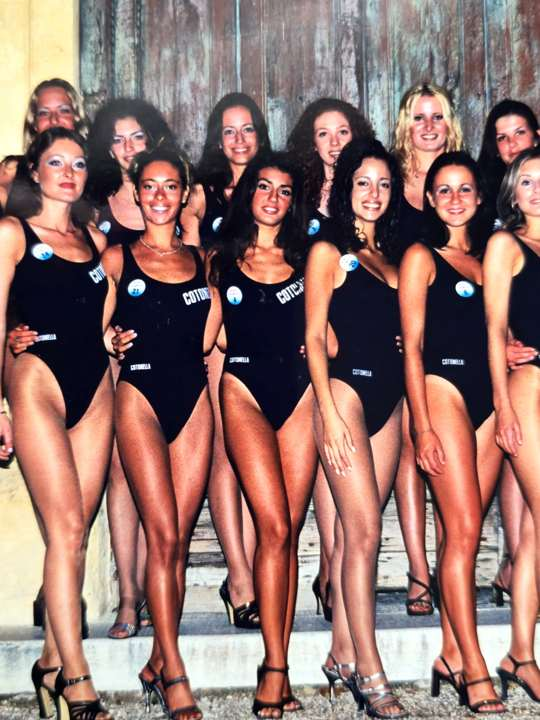
Personal photo, Cotonella-branded event — cannot be independently confirmed as the same Cantalago occasion as the photos above.
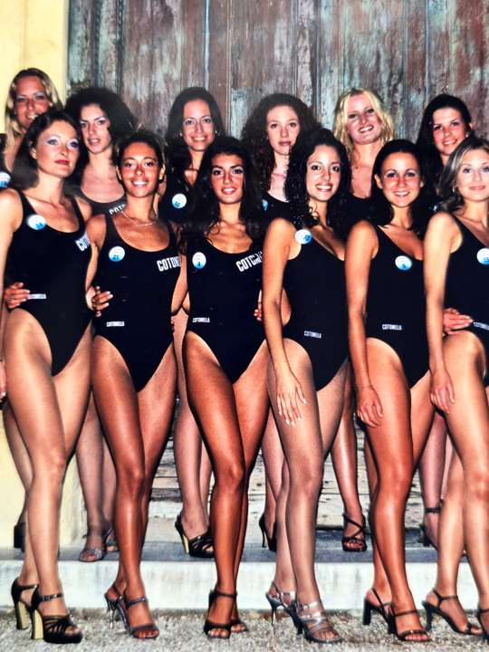
Personal photo, same Cotonella-branded series — likewise not confirmed as the same Cantalago occasion.
Personal snapshots, not press clippings. The first four photos appear to be one Cantalago 2000 occasion; the last two share the Cotonella branding but their date and specific event are not independently confirmed here.
SUPPORTING
Miss Italia 2000 final — RAI International broadcast
Screen captures, RAI International broadcast of the Miss Italia 2000 final
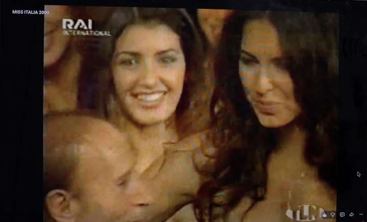
Screen capture from a Facebook repost of RAI International's broadcast of the Miss Italia 2000 final, labeled "MISS ITALIA 2000" on-screen. Group of finalists; individuals are not identified in this frame.
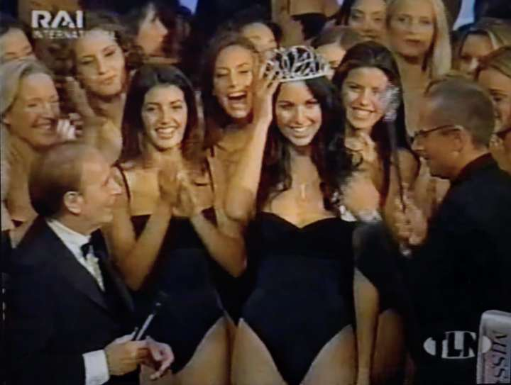
Same broadcast: the crowning moment, surrounded by fellow finalists and pageant officials.
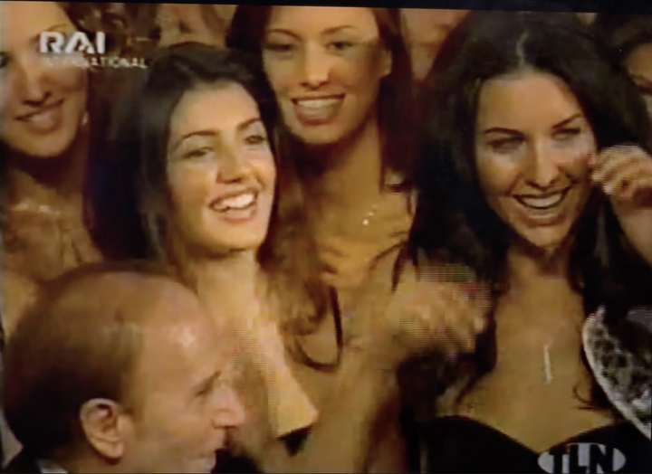
Same broadcast, a closer group shot.
Not independently verified: these are screen captures of a social-media repost of archival RAI footage, not an original press source. The frames show a group of Miss Italia 2000 finalists; this page does not assert which individual in the crowd is Valentina, since faces aren't independently labeled in the footage. Kept here only as supporting visual context for the same 2000 pageant cycle already documented in citation 4.
SUPPORTING
Pageant sashes — personal collection
Recent photo, not a period document
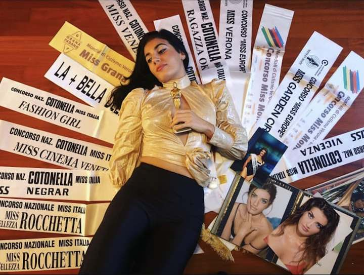
Recent photograph of Valentina's own kept sashes from her pageant appearances, staged for this archive — not a contemporaneous period photo, included here only to illustrate the range of titles documented above.
This is a modern photo, not an artifact from 2000–2004; it is included for illustrative purposes only and should not be read as a period document.
Stop, Anno 56° n.41, 18 October 2002 · Eva Tremila Express, n.3, 17 January 2003
Stop, Anno 56° n.41, 18 Oct 2002 — masthead and issue details confirmed.
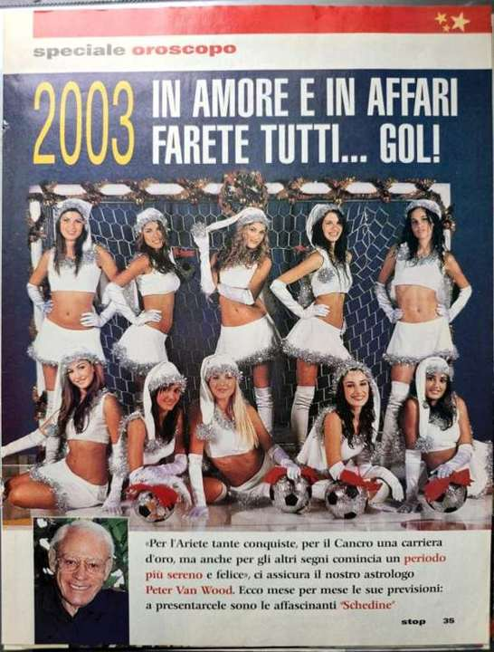
Stop, p.35 (masthead "stop 35" visible) — 2003 horoscope special, "Speciale oroscopo 2003," photographed with the Quelli Che Il Calcio "Schedine" in the same white/silver Christmas costumes seen in the Robbie Williams photo (citation 2); no individual names captioned here.
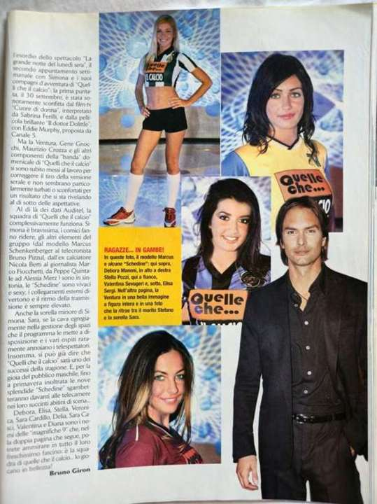
"Le magnifiche 9" feature, byline Bruno Giron (masthead not visible in this crop) — caption names "Debora Manoni... Stella Pozzi... Valentina Sevugeri... Elisa Sergi" and body text lists "Debora, Elisa, Stella, Veronica, Sara Cardillo, Delia, Sara Casci, Valentina e Diana" as the nine "Schedine."
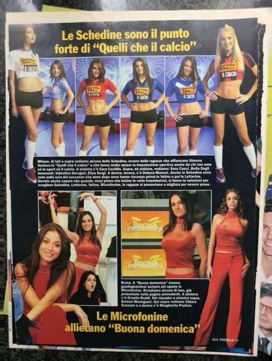
Eva Tremila Express, n.3, 17 Jan 2003, p.57 — "Sopra, da sinistra, vediamo: Sara Casci, Bella Degli Innocenti, Valentina Serugari, Elisa Sergi," among the "Schedine" of Quelli Che Il Calcio.
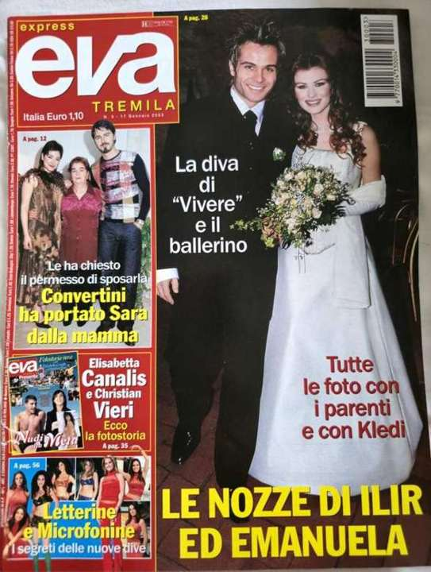
Eva Tremila Express — cover of the same issue, masthead and date confirmed: "N. 3 - 17 Gennaio 2003" (barcode 9 770014 330004); cover-teases "A pag. 56: Letterine e Microfonine — I segreti delle nuove dive."
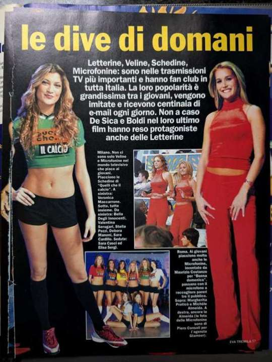
Eva Tremila Express, p.57 (masthead "EVA TREMILA 57" visible) — full page, "Le dive di domani," the same feature the citation excerpt above is cropped from.
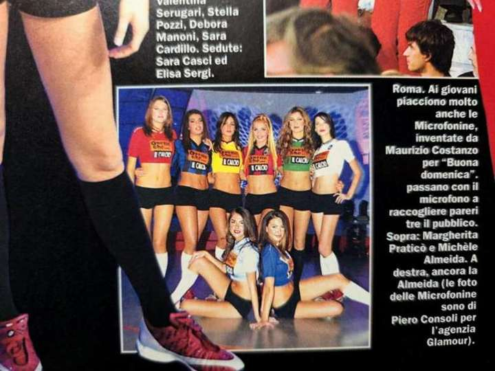
Closer crop of the same page's group photo and caption, clearer to read: "Valentina Serugari, Stella Pozzi, Debora Manoni, Sara Cardillo. Sedute: Sara Casci ed Elisa Sergi."
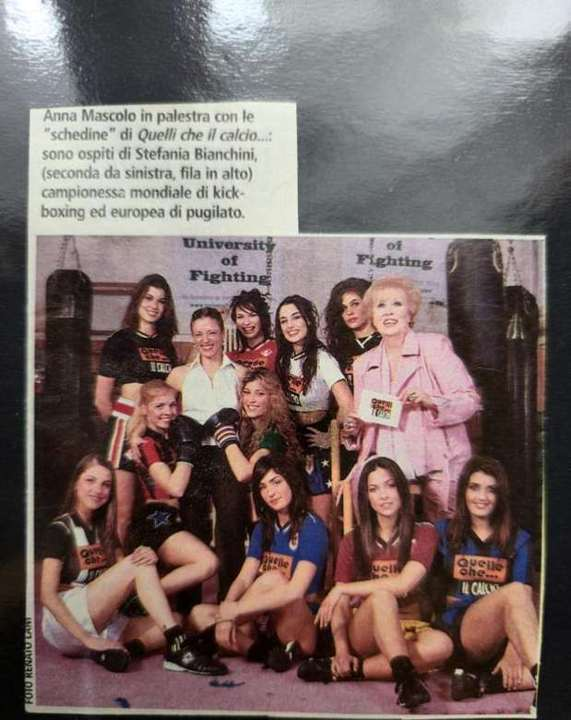
"Anna Mascolo in palestra con le 'schedine' di Quelli che il calcio... sono ospiti di Stefania Bianchini" (photo: Renato Lani) — publication and date not visible in this clipping.
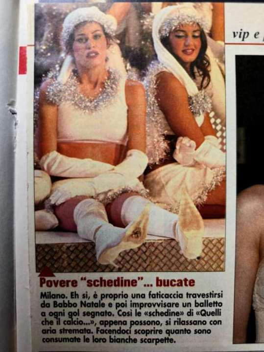
"Povere 'schedine'... bucate" — Milan, on the schedine's Santa Claus costume duties; same white/silver Christmas costume as citation 2's Robbie Williams photo and the Stop horoscope page above. Publication and date not visible in this clipping.
Open item: three of the photos above (the Bruno Giron "magnifiche 9" feature, the gym visit, and the Christmas-costume clipping) don't show a visible masthead or date in the scan — they're kept here because their content and style match the Quelli Che Il Calcio "Schedine" press cycle already documented for this citation, but the specific publication for each is not yet independently confirmed.
SUPPORTING
Backstage, RAI — “Quelli Che Il Calcio,” Milan (2002/2003, Simona Ventura edition)
Personal photos · handwritten period label on one print: “2002/2003 Milano – Quelli che il calcio – RAI” · backstage snapshots with guests of the show during Valentina's season as one of the “Schedine”
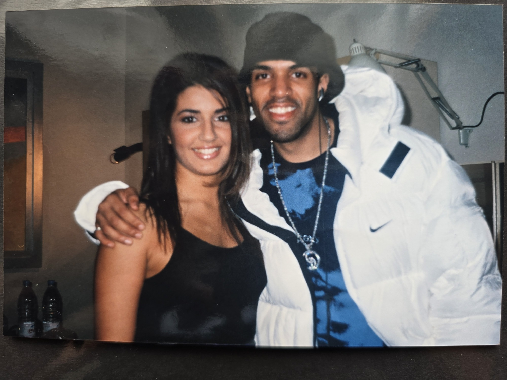
Craig David — backstage, Nov 2002.
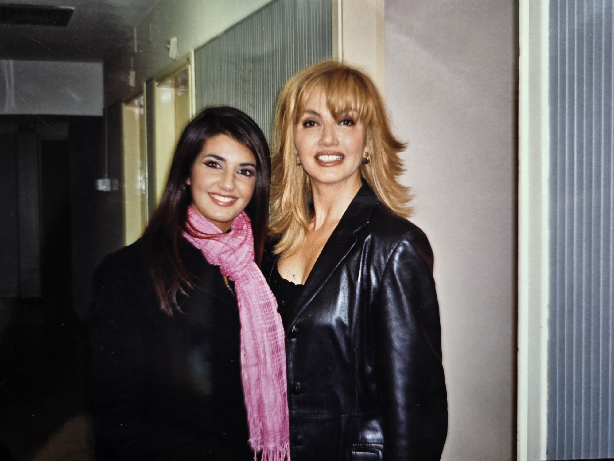
Milly Carlucci — backstage, Dec 2002.
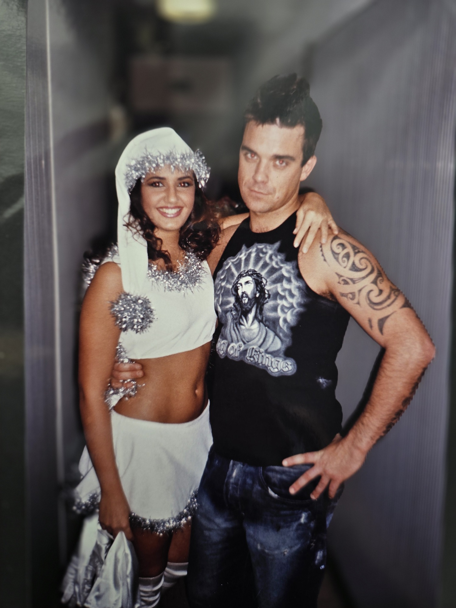
Robbie Williams — backstage, Dec 2002, in the white/silver Christmas “Schedine” costume. This is the same photo published alongside the L'Arena interview in citation 2 (“nella foto è abbracciata a Robbie Williams”), shown here at full quality.
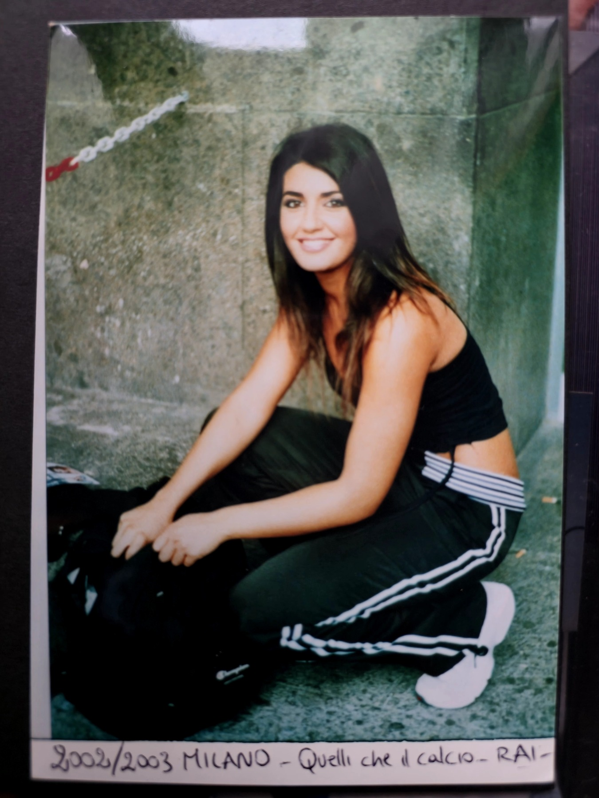
Rai studios, Milan — before rehearsals, season 2002/2003. The print itself carries a handwritten label, “2002/2003 Milano – Quelli che il calcio – RAI,” matching the same television period as citation 7's press coverage.
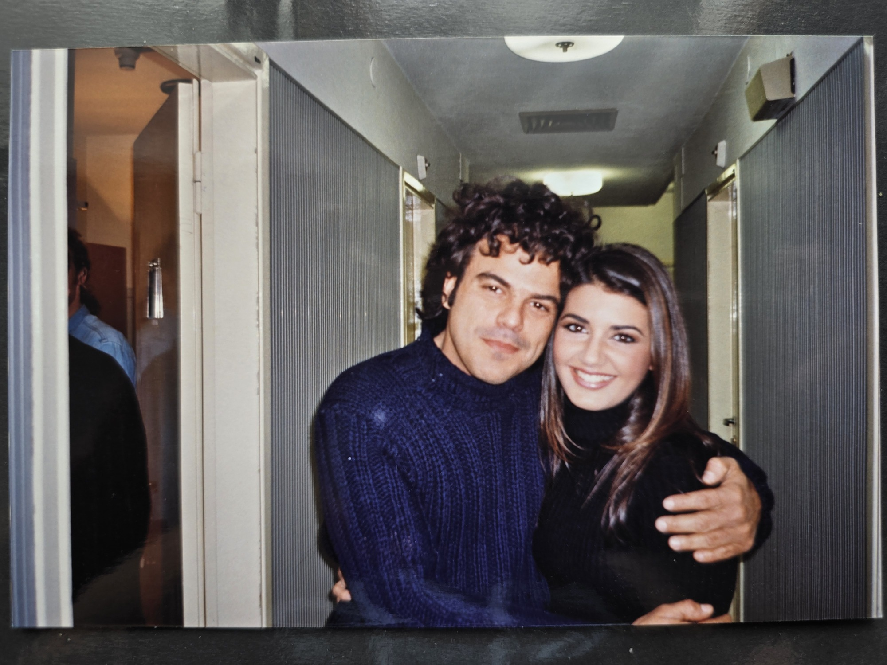
Francesco Renga — backstage, same 2002/2003 season (exact date not noted on the print).
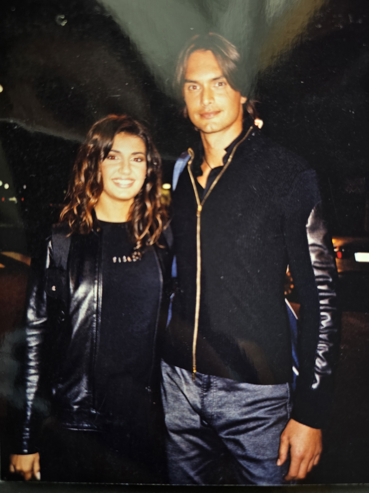
Marcus Schenkenberg — backstage, same 2002/2003 season (exact date not noted on the print).
Personal snapshots, not press clippings; dates come from a handwritten annotation on one of the prints and from the L'Arena publication date already on file for the Robbie Williams photo (citation 2) rather than from independently published sources for each photo, so this set is kept here as supporting context for citation 7 — Valentina's 2002/2003 season as one of the “Schedine” on Simona Ventura's Quelli Che Il Calcio — rather than as its own confirmed citation.
Corriere del Veneto (likely) · Tue 4 May 2004 · Hollywood Dance Club, Bardolino
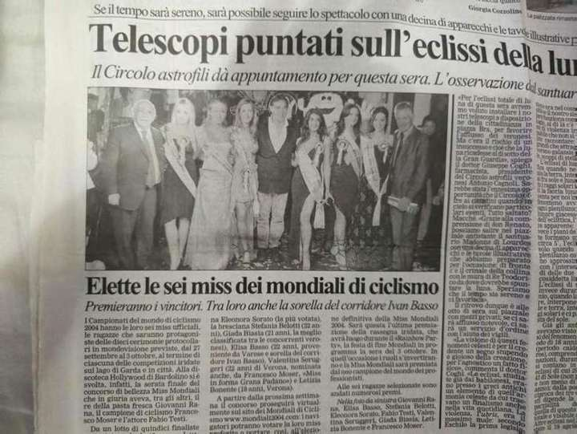
Names "Valentina Seruggeri (22 anni di Verona, nominata anche, da Francesco Moser, «Miss in forma Grana Padano»)" among the six selected finalists, judged by Giovanni Rana, Francesco Moser and Fabio Testi; fellow finalist Elisa Basso is named as the sister of cyclist Ivan Basso. Masthead not visible in this clipping.
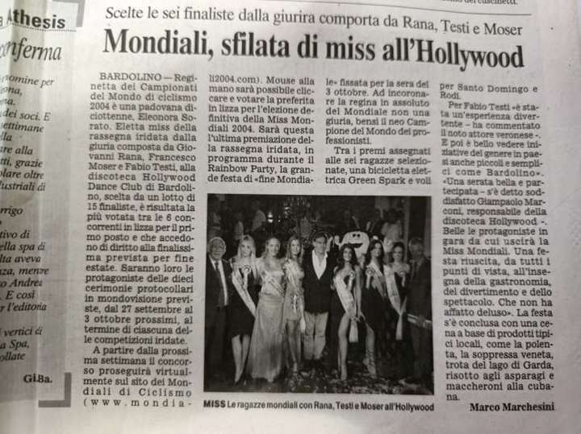
A related follow-up article, "Mondiali, sfilata di miss all'Hollywood" (bylines GiBa. and Marco Marchesini), re-using the same Rana/Testi/Moser group photo — doesn't name Valentina individually (it focuses on finalist Eleonora Sorato), but independently confirms the same venue, judges and contest.
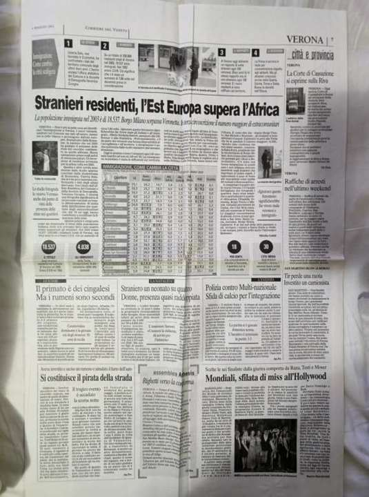
Corriere del Veneto — full page this follow-up article appears on, with masthead, date and page number all legible: "4 MAGGIO 2004... VERONA | 7."
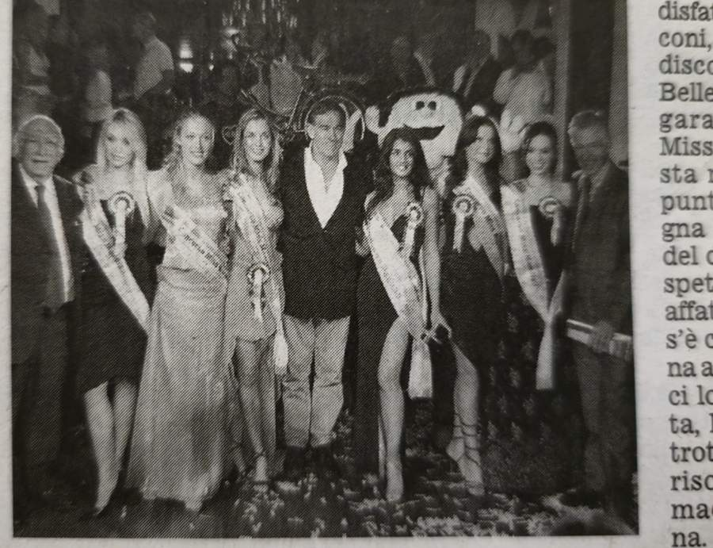
Enlarged crop of the same group photo, for a clearer view of the eight people named in the original clipping's caption (left to right: Giovanni Rana, Elisa Basso, Stefania Belotti, Eleonora Sorato, Giada Biasia, Valentina Seruggeri, Letizia Bonente, Francesco Moser) — individual faces aren't independently labeled here, so this crop doesn't identify who is who.
Note on the masthead: the original "Elette le sei miss" clipping (above) doesn't show its own masthead. It's labeled Corriere del Veneto here because the identical event photo is reused in a Corriere del Veneto page dated 4 May 2004 — the same date already on file for this citation — for the related follow-up article shown alongside it. That's strong circumstantial evidence, not a direct confirmation of the first clipping's own masthead, so it's marked "likely" above.
L'Arena, byline Lui.Sa. (Luigi Sabelli) · two separate, identically-headlined pieces: Sat 24 Jan 2009 and Fri 27 Feb 2009, both p.52, Giorno e Notte/Spettacoli
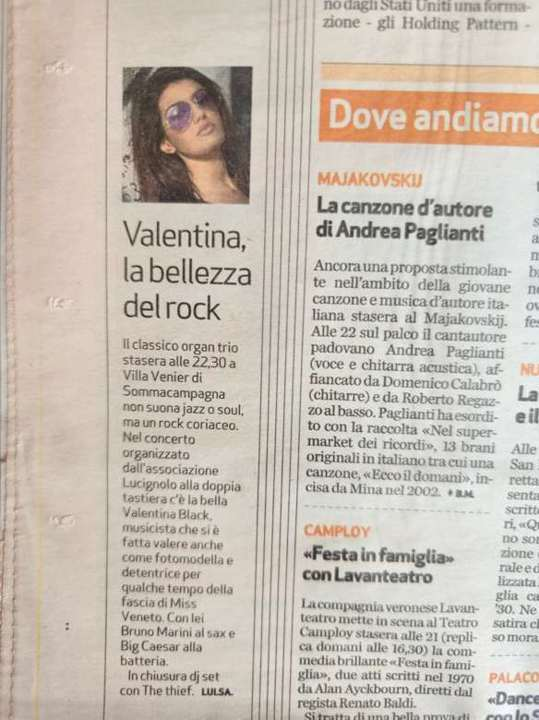
24 Jan 2009. Shorter piece: "stasera alle 22,30 a Villa Venier di Sommacampagna... concerto organizzato dall'associazione Lucignolo... Con lei Bruno Marini al sax e Big Caesar alla batteria. In chiusura dj set con The Thief."
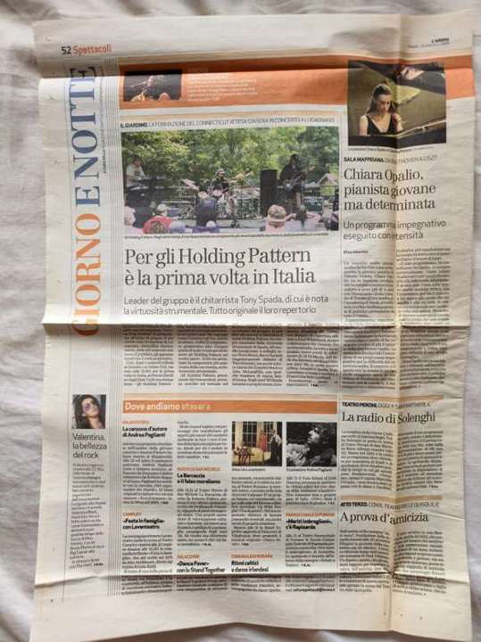
L'Arena — full page, masthead and date confirmed: "Sabato 24 Gennaio 2009," page "52 Spettacoli."27 Feb 2009. Longer piece, same headline: "Live. Alle Cantine dell'Arena alle 22,30" — the same organ trio (Bruno Marini, Big Caesar) plus singer Manuel Carli.L'Arena — full page, masthead and date confirmed: "Venerdì 27 Febbraio 2009," page "52 Spettacoli."
Resolved: this citation is actually two separate, independently dated L'Arena pieces that reuse the same headline formula and byline for the same organ trio, five weeks apart: 24 Jan 2009 (Villa Venier, Sommacampagna) and 27 Feb 2009 (Cantine dell'Arena, with Manuel Carli added). Both dates and mastheads are now confirmed by their own full-page scans. A previous caption on this page said "Villa Venier, Sommacampagna" — that text was correct for the 24 Jan piece, but at the time it was illustrated by the WRONG image: a genuine but unrelated L'Arena clipping about a different event, "Majakovskij: Serata funk/rock con il trio Black" (13 Nov 2009, guitarist Simon Beefsat, drummer Chris Tooker, no Bruno Marini or Big Caesar). That image has been moved to its own entry below instead of left misfiled here.
SUPPORTING
“Majakovskij: Serata funk/rock con il trio Black”
L'Arena · Venerdì 13 Nov 2009 · Majakovskij, Verona
"Stasera (alle 22) al Majakovskij, concerto funk/rock con il trio guidato dalla cantante e organista Valentina Black, affiancata dal chitarrista Simon Beefsat e dal batterista Chris Tooker." Masthead and date confirmed in frame.
A separate, later 2009 date for the same organ-trio act — kept here as its own item since the lineup (Simon Beefsat, Chris Tooker) differs from citation 10's Bruno Marini/Big Caesar/Manuel Carli line-up and it was previously (incorrectly) filed as if it were the same clipping.
By Emanuele Dionisi · Domenica Roma, Anno V n.2, March 2009, p.20–21
Front cover — "Domenica Roma," Anno V, n. 2, Marzo 2009, featuring "Valentina" (with Sandra and Elisabetta) on the cover.Sommario/masthead page — confirms issue date ("Chiuso in redazione il 07/03/09"), staff list including Emanuele Dionisi, and the article's page numbers (20–21) under "Volti Nuovi per la TV".Pages 18–19 — opening spread of "Finalmente... Volti Nuovi, talenti per il cinema, la TV e la musica," byline Emanuele Dionisi, introducing the feature on Elisabetta Del Medico, Sandra Liutkeviciute and Valentina Serugeri (in arte Valentina Black).Pages 20–21 — the profile continues, naming Valentina's TV credits (Domenica In, Wozz Up, Veline, Dolce Amaro, Il Galà dello Sport, Scommettiamo Che, Cantalago, and "Schedina" on Quelli Che Il Calcio 2002-2003) and her music beginnings (piano/organ from age 10, ICE9 in 2005, Freedom Jazz Dance with Jimmy Carl Black, Beat Generator).
Only the pages where Valentina appears are shown here (cover, Sommario and the two-page feature spread). Click any image to view it enlarged. The feature profiles three "talenti emergenti" — Elisabetta Del Medico, Sandra Liutkeviciute and Valentina Black — and independently corroborates her TV credits and early music history already documented elsewhere in this archive and in the biography.
“Le miss veronesi in corsa per la più bella d'Europa”
L'Arena · Martedì 4 Settembre 2001 · p.26, Cronaca del Garda-Baldo · Al Garden Circus, Desenzano
"Le miss premiate a Desenzano." Text: "Al Garden Circus di Desenzano, sono state elette tre bellezze che aspirano a diventare la più bella d'Europa... La fascia di «Miss Garden Circus» l'ha portata a casa Valentina Serugeri di Verona."L'Arena — full page, masthead and date confirmed: "Martedì 4 Settembre 2001," page "26 Cronaca del Garda-Baldo."
Names Valentina Serugeri directly as winner of the "Miss Garden Circus" sash at this Desenzano heat, alongside two other titled finalists ("Lei tra... primo sprint" and "Gambe in primo piano," sash text partly obscured). Individual faces in the group photo aren't labeled by name in the caption, so no specific position in the photo is asserted here beyond the article's own text.
"La seconda serata del concorso Miss Mondiali, ospitata dal Barcellona Club di Bussolengo, ha portato all'elezione di tre nuove candidate al ruolo di «premiatrici» dei prossimi Mondiali di ciclismo. Il maggior numero di voti è andato alla 22enne veronese Valentina Seruggeri (che ha già partecipato ad alcune importanti trasmissioni tv e alla finale di Miss Italia). Con lei si sono qualificate alla finale del 30 aprile all'Hollywood di Bardolino, la 28enne milanese Ilaria Menegollo e un'altra veronese: Martina Sorio, di 18 anni." Photo caption: "Le tre ragazze elette al Barcelona Club (foto Express)."L'Arena — full page, masthead and date confirmed: "Lunedì 29 Marzo 2004," page "8 Cronaca."
An earlier, independently-dated companion piece to citation 8's "Elette le sei miss dei mondiali di ciclismo" (4 May 2004): this 29 March 2004 article covers the qualifying heat that put Valentina Seruggeri through, by name and with the most votes, to the 30 April final at the Hollywood in Bardolino that citation 8 then reports on.
L'Arena, byline L.S. · Sabato 30 Gennaio 2010 · p.52, Giorno e Notte/Spettacoli · Majakovskji, via Fiumicello 9, Verona
"MAJAKOVSKJI. Arriva la cantante e organista. Miscela di soul e rock in stile Valentina Black." Previews that evening's concert (22:00) and the in-progress album to be titled "4 U," with the line-up Bruno Marini (sax), Christopher Tooker (drums/voice), Ernesto Da Silva (percussion), Davide Bendazzoli (theremin) and Joao Da Sila "Ticotico" (dance). Also recaps her career: born in Verona, February 1982; early work as a fotomodella and briefly Miss Veneto runner-up; collaborations with Bruno Marini and with Jimmy Carl Black (Frank Zappa's Mothers of Invention drummer, 1965–71), with whom she recorded as vocalist on Freedom Jazz Dance; singles released via Vibra and Azzurra, including "Round Trip To AC/DC's Gig."L'Arena — full page, masthead and date confirmed: "Sabato 30 Gennaio 2010," page "52 Spettacoli."
Note: these two scans were sent as possible support for the "SUPPORTING" entry above (13 Nov 2009, "Serata funk/rock con il trio Black"), but on inspection they're a third, separate Majakovskji clipping — different headline, different date (30 Jan 2010 vs. 13 Nov 2009), and it previews the "4 U" album by name where the Nov 2009 piece doesn't. Given its own confirmed masthead and date, it's kept here as its own citation rather than folded into either the 13 Nov 2009 entry or citation 10.
SUPPORTING
Music Week “Women in Music Awards 2024”, London
Personal photos · 2024 · industry gala, London (venue not otherwise identified in the photos)
Table place card printed with her name, bearing the event's own branding (SoundCloud, UK Music, AIM) — documentary evidence she was a named, seated guest.On the official step-and-repeat backdrop (Spotify, SoundCloud, TikTok, PRS Foundation, Downtown, UK Music and other event sponsors visible).Standing on the event's own branded floor decal, "Music Week Women in Music Awards 2024 — Headline Partner SoundCloud, in association with UK Music | AIM."A further red-carpet photo against the same step-and-repeat.Inside the venue, with the awards-dinner ballroom visible.The ballroom itself, with Music Week-branded stage screens and the seated dinner underway.
Personal photos and event place card; independent press coverage not yet found.